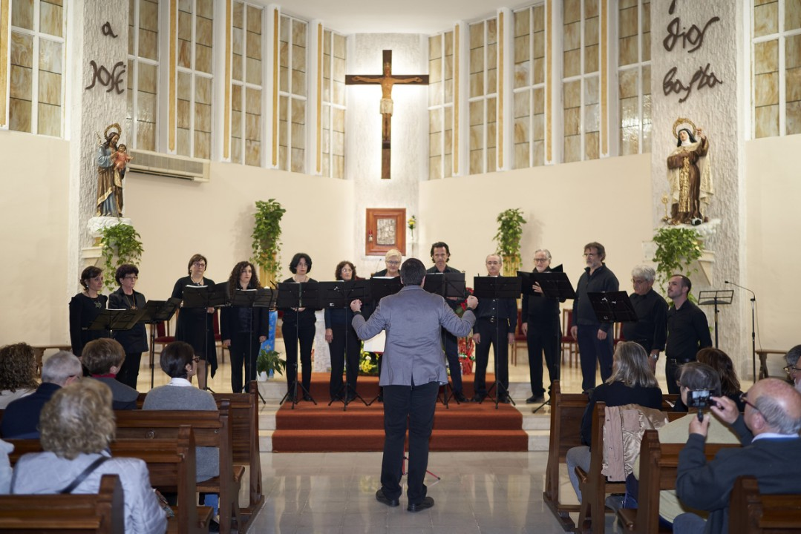

Els nostres concerts
- Seu de la Unió Musical l’Horta de Sant Marcel·lí 13.02.2015 – 21.09.2018
- Església de Sant Marcel·lí 17.06.2016 – 03.12.2017
- Església del Sagrat Cor de Jesús (Plaça Patraix) 18.06.20.17 – 16.12.18
- Església de Sta. Maria de Jesús (Plaça Jesús) 25.06.2017 – 30.06.2018
- Església de Ntra. Senyora del Pilar 11.02.2018
- Església Parroquial de Tavernes Blanques 25.11.2018 amb la Banda de Tavernes Blanques
- Església de Sta. María Magdalena de l’Olleria 24.02.2019
- Casa Museu Benlliure 18.05.2019
- Església de Sto. Tomé (Toledo) 08.06.2019
- Tavernes Blanques 01.07.2019
- Església Sta. Teresa de Jesús 08.12.2019
- Banda Gerónima Galés 20.12.2019
- Església Sta. Teresa de Jesús 06.05.2022
- Església del Sagrat Cor de Jesús (plaça Patraix) 27.11.2022
- Museu de Belles Arts de València 15.02.2023
- Església de Santa Llúcia de València 09.04.2023
- Palau de Cervelló (València) 22.07.2023
- Gravació en Església del Sagrat Cor de Jesús (plaça de Patraix) 11.11.2023
- Visita a l'escriptor Josep Piera a sa casa de la Drova i interpretació del 'Lament a la Caiguda de València' de Xavi Garí 30.05.2024
